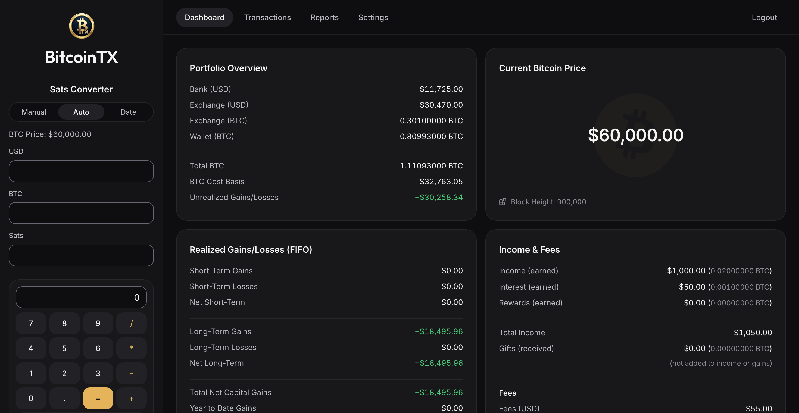
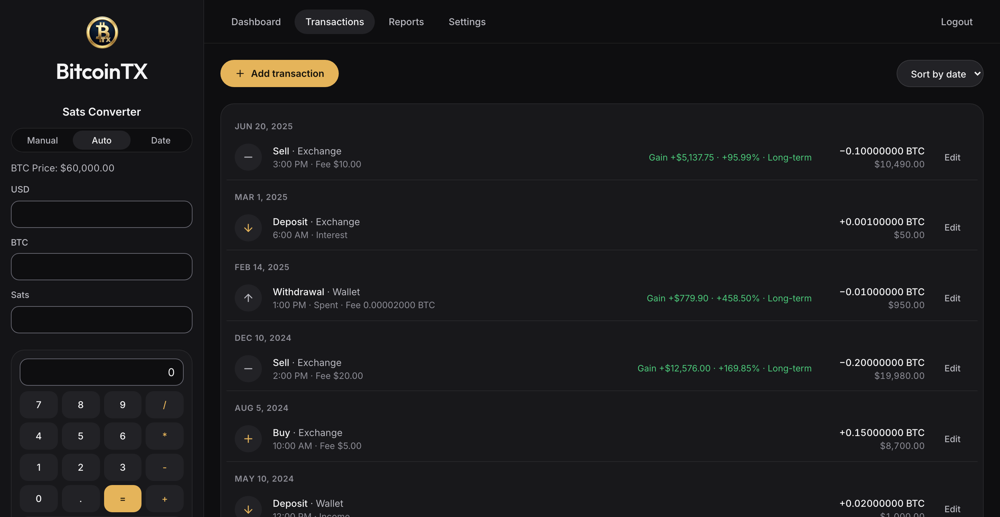
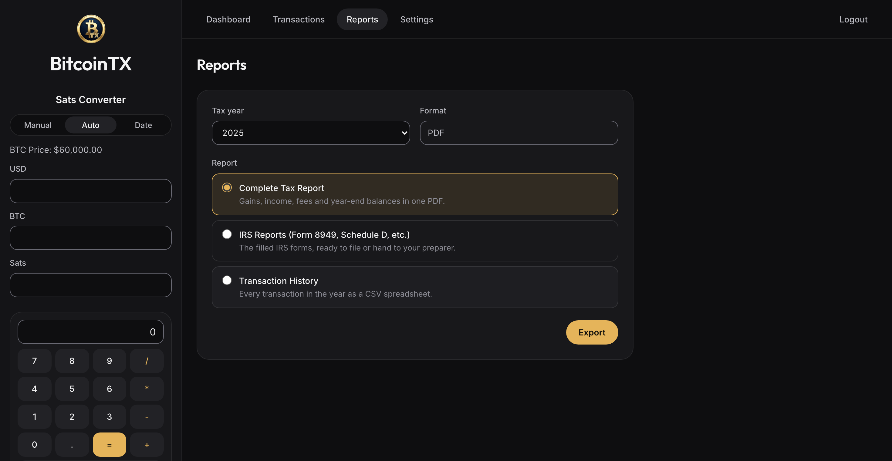
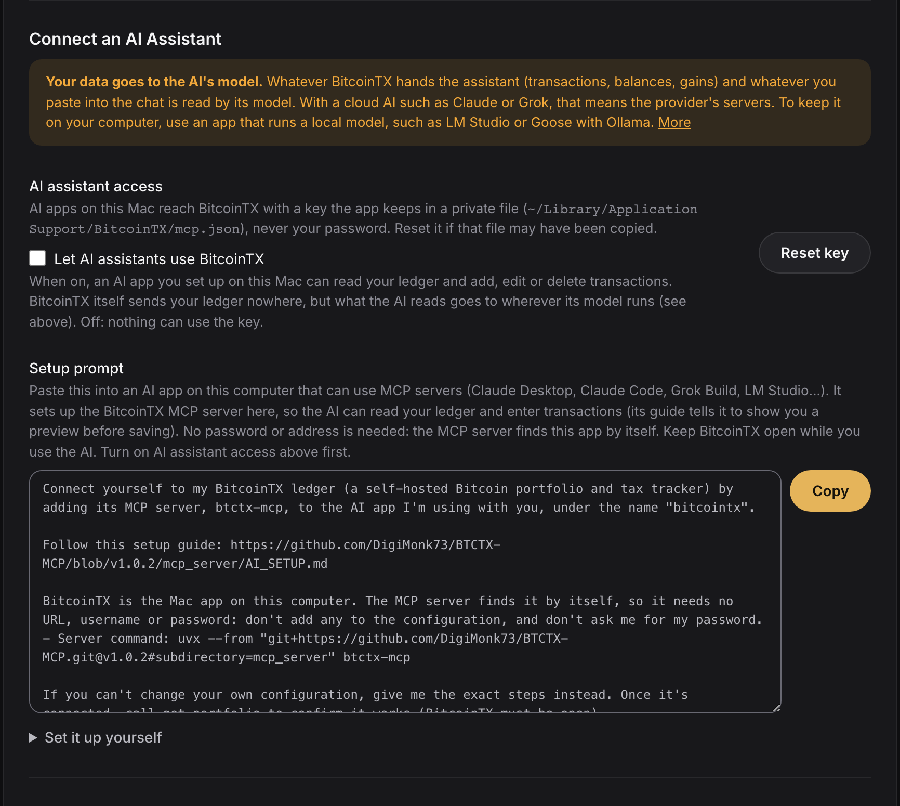

Bitcoin taxes, worked out on your own machine.
BitcoinTX keeps a double-entry ledger of every buy, sell and move, matches each sale to the coins it came from, and fills in IRS Form 8949 and Schedule D. It runs on your Mac, your StartOS server or in Docker. No account, no cloud, free and open source.
Tax forms for the United States (IRS). BitcoinTX doesn't give tax advice; check its output before you file.
You paste the exchange email, or enter it yourself
BitcoinTX records it and matches it to the coins it came from
You file the filled-in form
| (a) Property | (b) Acquired | (c) Sold | (d) Proceeds | (e) Basis | (h) Gain |
|---|---|---|---|---|---|
| 0.05 BTC | 01/10/2023 | 06/20/2025 | 4,838.00 | 850.50 | 3,987.50 |
Carried to Schedule D, line 9.
Your whole stack, one screen.
Bank, exchange and cold-storage balances, what your coins cost, what you've gained, and what you earned in bitcoin.



What it does
Built for bitcoin only, and for the way bitcoiners actually move coins: buy on an exchange, withdraw to cold storage, spend or sell later.
RecordEnter what happened once; the ledger works out the rest.
Five kinds of transaction
Deposit, withdrawal, transfer, buy and sell, across your bank, exchange cash, exchange bitcoin and your own wallet. Every one is a balanced double entry.
FIFO lots per account
Each sale uses the oldest coins in that account. Moving coins to cold storage keeps their purchase date and cost, so the holding clock and the basis travel with them.
Network fees handled
The on-chain fee of a transfer or withdrawal is recorded as its own small disposal, valued at that day's price.
Backdate freely
Every add, edit or delete recalculates the whole ledger in date order, so a forgotten purchase from two years ago lands in the right place.
Imports
River's CSV export, a generic CSV to start a new ledger, or an AI assistant that turns emails and wallet histories into entries.
Income at its real value
Bitcoin earned as pay, interest or rewards is valued at that day's price, which is both its cost basis and the income you report.
FileForms your preparer, or you, can use as they are.
Form 8949 and Schedule D
The official IRS PDFs, filled in and flattened, one sheet per box, with totals carried to the right Schedule D lines.
1099-DA boxes
From tax year 2025, exchange sales go in the boxes for Form 1099-DA. If your broker's form says something different for a sale, record that on the sale and the box follows.
Complete tax report
Gains, income, fees and year-end balances in one PDF, plus your transaction history as a spreadsheet.
Your tax timezone
Decides which year a late-night December 31 sale belongs to, the dates on the forms, and the day a holding turns long-term: after one full year, as the IRS counts it.
CheckSee what's off before it reaches a form.
Ledger review
A read-only list of entries worth a second look: a spend saved at $0, a deposit with no cost basis, a fee valued far from the day's price, and every figure a recalculation would change.
Stored price history
Past daily prices are kept on your machine. Nothing is ever valued at today's price or at $0 by accident: with no price, BitcoinTX asks.
Encrypted backups
Download the whole database as a password-protected backup and restore it on any install. Upgrades keep a copy of the old database first.
Keep privateYour financial history is nobody else's business.
Runs where you are
On your Mac, your StartOS server or your own Docker host, behind your own login. There's no BitcoinTX account and no server of ours.
Privacy & Network settings
Turn live price data off, use your own mempool server, or send every outside request through Tor or another proxy.
Lookups that don't give you away
Missing prices are downloaded in bulk, about a thousand days at a time, so no request names the date of one of your transactions.
Nothing phones home
No analytics, no trackers, fonts shipped with the app. The database and backups are readable by you alone.
Or just describe it to an AI.
BitcoinTX includes an MCP server, so an AI app on your computer can read your ledger and enter transactions for you. It shows a preview with duplicates flagged and the resulting gains, and saves only after you confirm.
- Here's my River email: "You bought 0.00231 BTC for $150.00 (fee $1.49) on Mar 3"
- I withdrew everything from the exchange to my Coldcard on March 10, network fee 1,800 sats
- Got paid 250k sats for a logo design on May 2, straight to cold storage
Pick the model with care. The AI's model reads what BitcoinTX hands it and whatever you paste. With a cloud AI such as Claude or Grok, that goes to the provider. To keep it on your computer, use an app that runs a local model, such as LM Studio or Goose with Ollama.
- Works with Claude Desktop, Claude Code, Grok Build, LM Studio, Goose and other MCP apps.
- Settings has a setup prompt: paste it into your AI app and it sets itself up.
- In the Mac app, AI access is off until you turn it on, and uses a key, never your password.

Download
Every link below fetches the latest release. What changed: release notes.
Mac
A normal Mac app. Your data stays in your user folder.
- Open the .dmg and drag BitcoinTX to Applications.
- The app isn't signed by Apple yet. The first time, Control-click it and choose Open. On macOS 15 or later, open it once, then go to System Settings, Privacy & Security, and click Open Anyway.
StartOS
For a Start9 server: runs next to your node, reachable from your devices.
- In StartOS, open Sideload and upload btctx.s9pk.
- Run Show Credentials, start the service and open its Web UI.
- Package source: BTCTX-StartOS.
Docker
Linux, Windows or Mac; amd64 and arm64.
docker run -d -p 8080:80 -v btctx-data:/data ghcr.io/digimonk73/btctx-mcp:latest
- Open http://localhost:8080.
- Your data lives in the btctx-data volume. Pin a version with :vX.Y.Z.
First run
A new install starts with the login admin / password. The first screen has you set your own before anything else.
Upgrading
Install the new version over the old one. It upgrades your database by itself and keeps a copy of the old one.
From source
Python 3.10+ and Node 20+. Instructions in the README.